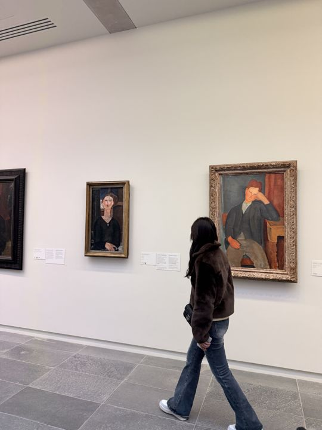

Cultural Journeys
Museums and cultural sites, grouped by city.
Musée d'Orsay, Paris
Photos: 12
A Beaux-Arts railway station built for the 1900 World's Fair, saved from demolition and reopened as a museum in 1986. Its vaulted glass roof now covers the largest holding of Impressionist and Post-Impressionist work anywhere, hung in rough chronological order so the top floor reads as one continuous argument from Manet through Van Gogh. The great clock faces at either end still look out over the Seine.


Musée du Louvre, Paris
Photos: 14
A royal palace turned public museum in 1793, and now the most visited art museum in the world. The collection runs from Mesopotamian brick to nineteenth-century French canvas across eight departments, which is why no visit covers it: the Egyptian, Greek and painting wings are three separate days. The glass pyramid of 1989 marks the axis that the palace itself was built along.


Musée de l'Orangerie, Paris
Photos: 14
Two oval rooms built to a plan Monet set himself, holding the Water Lilies cycle he worked on from 1914 until his death and which opened to the public in 1927. The rooms are the museum: daylight enters from above and the canvases wrap the walls without a horizon line to stop them. The lower floor holds the Jean Walter and Paul Guillaume collection, Renoir to Soutine.





Musée Jacquemart-André, Paris
Photos: 7
A private mansion on Boulevard Haussmann, left as its collectors arranged it rather than rearranged for a public. Édouard André and Nélie Jacquemart travelled for decades and hung what they bought in the rooms it was bought for, so the Italian Renaissance galleries and the eighteenth-century French salon read as a house that happens to be open. The winter garden stair by Tiepolo's frescoes is the centre of the building.


Palais de Tokyo, Paris
Photos: 24
A 1937 exhibition pavilion on the Seine that sat largely unused for decades before reopening in 2002 as a space with no permanent collection at all. Every floor is a rotating set of exhibitions, so the building is always different and often unfinished on purpose. It is the most consistently experimental large space in Paris.


Bourse de Commerce, Paris
Photos: 15
An eighteenth-century grain exchange, roofed in 1811 with a cast-iron dome that had to be seen from the inside. Tadao Ando inserted a concrete cylinder inside that rotunda without touching the ring of frescoes behind it, and the François Pinault Collection opened there in 2021. Contemporary work is shown in the round, in dialogue with a building that was never meant for it.


Petit Palais, Paris
Photos: 13
Built as the fine-arts pavilion of the 1900 World's Fair, opposite the Grand Palais across a gilded courtyard garden. It holds the city of Paris's own collection: Greek and Roman objects, medieval and Renaissance pieces, and a strong run of French painting and sculpture from the nineteenth century. Admission to the permanent rooms is free, which is not incidental to how it is used.


Palace of Versailles
Photos: 10
Louis XIV moved the court here in 1682 and the palace remained the centre of French government until 1789. The Hall of Mirrors is seventy-three metres of glass facing seventeen arched windows, and the gardens beyond were laid out by Le Nôtre as a single sightline running to the horizon. The Grand and Petit Trianon at the far end of the grounds are quieter and, for many, the better rooms.


Vatican Museums, Rome
Photos: 11
Founded from the papal collections in 1506 and now a route rather than a museum: seven kilometres of corridor that ends at the Sistine Chapel. The Raphael Rooms, the map gallery and the Belvedere courtyard's Laocoön and Apollo come before it, and the crowd is part of the architecture. Michelangelo painted the chapel ceiling between 1508 and 1512 and the Last Judgment twenty-five years after that.


Pantheon, Rome
Photos: 6
A temple finished under Hadrian around 126 AD, kept intact because it was consecrated as a church in 609. The dome is still the largest unreinforced concrete one ever built, and the oculus at its centre is the only source of light, so rain falls on the original marble floor. Raphael is buried inside, which is why the building stayed a monument through every century that followed.


Galleria Nazionale d'Arte Moderna, Rome
Photos: 11
Italy's national collection of modern art, opened in 1883 and housed since 1911 in a Beaux-Arts building on Via delle Belle Arti. It holds the Macchiaioli painters who broke Italian landscape open in the 1850s, and then carries that thread through Divisionism, Futurism and the twentieth century. Rooms of sculpture alternate with the paintings rather than being kept apart.


MAXXI, Rome
Photos: 8
Zaha Hadid's museum of twenty-first-century art in the Flaminio district, opened in 2010 after a competition held a decade earlier. The building is a set of intersecting concrete bands with the steel roof trusses left exposed, and the galleries flow into each other instead of filing past a sequence of doors. It is the first national museum Italy built for contemporary art.


Ponte, Rome
Photos: 10
A walk-through sequence of rooms rather than a hang: neon, projected crystal and hand-painted lines carried along the walls. The work is the passage through it, and the photographs here are the only record of how the rooms were lit at the time. Nothing is framed, so nothing survives as an object.


Van Gogh Immersive, Florence
Photos: 10
Van Gogh's paintings projected to wall height across an old Florentine interior, with Starry Night and the sunflowers running past the stone. The scale changes the argument: brushstroke becomes movement, and the works read as a sequence instead of as individual canvases. It is deliberately not a museum of objects.


Galleria degli Uffizi, Florence
Photos: 12
Built by Vasari from 1560 for Cosimo I as the offices of the Florentine magistrates, and opened to visitors from 1581, which makes it the oldest public collection in Europe. The Medici paintings arrived as a family holding, so Botticelli's Birth of Venus and the Leonardo annunciation hang a few rooms apart. The Vasari Corridor runs above the Arno to the Pitti Palace, the family's route to work.


Teatro alla Scala, Milan
Photos: 11
Piermarini's opera house, opened in 1778, and the stage against which Verdi and the nineteenth-century Italian repertoire are measured. The auditorium is horseshoe-shaped and lined with six tiers of boxes, which is why the audience sees itself as much as the stage. The adjoining museum holds costumes, instruments and the archive of the house.


La Biennale di Venezia
Photos: 23
Held since 1895 in the Giardini, where thirty national pavilions each stage their own answer to the same question, and extended into the Arsenale, the medieval shipyard that gives the exhibition its scale. Nations with no pavilion of their own take space in the city itself, so the exhibition spreads through Venice rather than sitting in one place. The art and architecture editions alternate.


Städel Museum, Frankfurt
Photos: 18
A civic foundation since 1815, holding seven hundred years of European art in one building on the Main. It runs from Cranach and Holbein through the German Romantics to Baselitz and Richter, and the twentieth century upstairs is unusually strong for a collection of this size. The 2012 garden wing was sunk under the lawn to add a skylit gallery without changing the street.


Kunsthaus Zürich
Photos: 17
Switzerland's largest art museum, run by an artists' society founded in 1787, and still shaped by that origin. Monet, Munch, Picasso and Giacometti form the spine, with a whole room given to the Chagall windows. David Chipperfield's 2021 extension opened the museum onto the Heimplatz and doubled the exhibition space without touching the 1910 building.


Expo 2025, Osaka
Photos: 15
A world's fair on the artificial island of Yumeshima, with national pavilions built largely in mass timber around Sou Fujimoto's Grand Ring, which circles the whole site and remains the largest timber structure in the world. Each pavilion is a country stating its own case about the future, and the architecture is the argument. Access was by the metro extension built for the site.